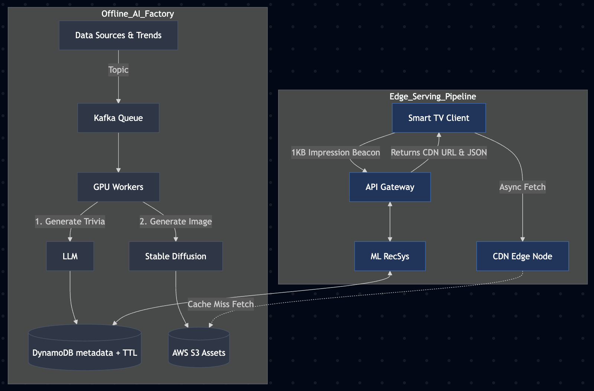
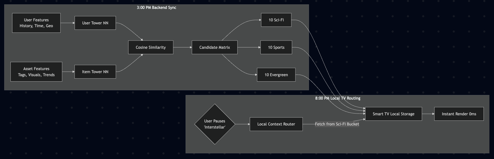
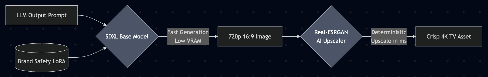
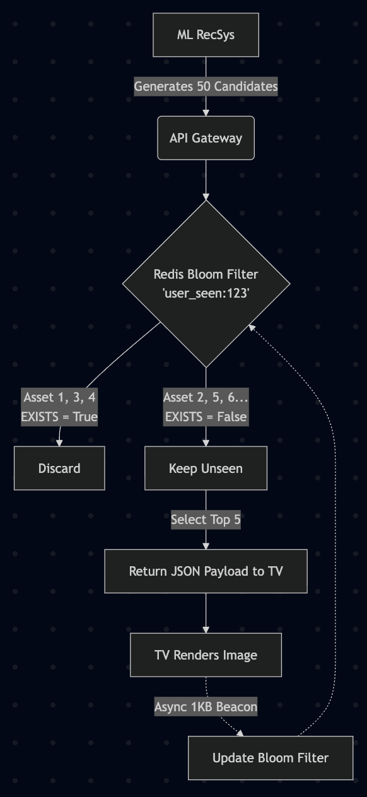

Designing a Backend System for 50 Million Smart TVs
How I architected an asynchronous, edge-cached GenAI pipeline to serve 4K personalized screensavers with zero latency.
The Problem Statement
Design a backend system for 50 million Smart TVs. When a TV goes idle, it must instantly display personalized, AI-generated content (a 4K image + trivia). At peak (8:00 PM), 5 million TVs might request this simultaneously.
If I attempt to generate a 4K image using an LLM and Stable Diffusion the second a user pauses their TV, it will bankrupt the GPU budget and fail the latency requirements. Here is my solution for enterprise scaling using asynchronous generation and edge-prefetching.
Step 1: Establishing the System Boundaries
Defining the constraints of the product:
- Pull or Push: Unlike a chatbot where a user pulls data by typing a query, a Smart TV screensaver is a push medium. We push content to them when they go idle. Therefore, real-time Vector DB search is not the primary bottleneck.
- Scale & Spikes: We are handling 50 Million daily active TVs. The critical bottleneck is the Prime Time Spike at 8:00 PM, where 5 million TVs might request content within a 60-second window.
- Content Mix: To keep the feed engaging without burning through compute costs, we must establish 2 distinct content buckets:
- Trending: Hyper-relevant to today (e.g., Last Night's Cricket Match). Needs to be generated daily. Has a strict Time-To-Live (TTL) of 24-48 hours.
- Evergreen: General appeal (e.g., Wildlife, History, Science). Generated once. Never expires (TTL = Infinity), but its serving frequency is governed by a user engagement score.
- Latency: The screensaver must appear in sub-second time after the user pauses the TV.
Step 2: Estimations
1. Peak Network Egress
- With background prefetching, TVs download their heavy 500KB payloads asynchronously via a CDN during off-peak hours.
- At the 8:00 PM "Prime Time" spike, 5 million TVs pause within 60 seconds = ~83,000 Requests Per Second (QPS).
- Because the image is already cached locally on the TV, the API Gateway only receives a tiny 1KB impression event to log the view.
- 83,000 QPS * 1KB = ~83 MB/s of outbound API traffic. By shifting the 500KB payloads to off-peak CDN delivery, we avoid what would have been a catastrophic 41.5 GB/s traffic spike, virtually eliminating backend bandwidth bottlenecks and guaranteeing 0ms rendering latency.
2. Storage Scaling
- Evergreen Storage: We pre-generate a base catalog of 5 million evergreen assets. 5M * 500KB = 2.5 Terabytes. Cheap and static.
- Trending Storage (Rolling): We generate 100,000 trending assets per day. 100k * 500KB = 50 GB/day. Because these expire and are deleted after 48 hours TTL, this specific bucket never exceeds ~100GB.
3. Offline GPU Compute (The AI Factory)
- Generating 100k trending images per day. A self-hosted Stable Diffusion model takes ~2 seconds per image.
- 100,000 * 2s = 200,000 seconds of compute (~55 hours).
- Architect's Conclusion: We can clear the entire daily trending queue in a 5-hour off-peak window using a cluster of just 11 to 15 A10G GPUs, keeping our cloud compute costs highly predictable.

The decoupling of the Offline AI GPU Factory from the Online Edge-Cached Serving pipeline.
Step 3: High-Level Design (HLD)
I’ve separated the heavy asynchronous AI generation from the ultra-fast synchronous serving.
Part A: The Offline Content Pipelines
We run two distinct pipelines on our GPU workers:
- Trending Content Generation Pipeline: A service scrapes Twitter APIs, Google Trends, and News RSS feeds. It pushes topics to a High-Priority Kafka queue. An LLM generates trivia -> Stable Diffusion generates an image -> Image goes to S3 -> Metadata goes to DynamoDB with a TTL = 48 hours.
- Evergreen Content Generation Pipeline: When GPUs are idle, they pull from a massive backlog of Wikipedia topics. They generate timeless assets -> Image goes to S3 -> Metadata goes to DynamoDB with TTL = Never.
Part B: The Edge-Cached Serving Pipeline
I do not wait for the user to pause.
- The Background Sync: A daemon runs on the Smart TV. At 3:00 PM, it silently pings our API Gateway. Our Two-Tower ML RecSys predicts the user's likely evening watch habits. Instead of a flat list, it retrieves a structured, context-aware candidate matrix (e.g., 10 Sci-Fi assets, 10 Sports assets, 10 Evergreen assets). The TV downloads this batch of 30 payloads and stores them on its local hard drive. 30 items * 500KB = 15 Megabytes. This is a microscopic footprint that will easily fit.
- Instant Render (8:00 PM): The user pauses a sci-fi movie on Netflix. The TV does not connect to the internet. Instead, a lightweight client-side router captures the active context (genre: sci-fi), plucks Asset #1 from the pre-fetched "Sci-Fi" bucket, and instantly renders it. This guarantees hyper-personalization matching the vibe of the show with 0ms network latency.
- The Beacon: While the user views the image, the TV fires a 1KB background network call to our server. "User 123 viewed image A".

The Two-Tower ML model predicting evening watch habits and pushing a context matrix to the client.
Step 4: Component Deep Dive & Edge Cases
How do I handle power users, stale data, and system failures?
1. Heavy Pauser Problem
What if a user pauses 40 times in one night, exhausting their cache of 30 images?
- The Fix: When the TV's unseen local queue drops to 5 items, the background daemon silently triggers a network call to fetch the next batch of 30. The cache refills itself before the user even sees a loading screen.
2. Content Freshness
If we prefetch a "Good Morning" image at 9:00 AM, but the user doesn't pause until 9:00 PM, the content is stale.
- The Fix: The payload includes a
client_ttltimestamp. If the TV hasn't shown the morning image by 1PM, the TV silently deletes it. For ultra-trending events (like a live match result), the API pushes a priority flag to bypass the queue and render at index 0.
3. Content Fallback (Total Network Outage)
If the user's internet goes down entirely:
- The Fix: We permanently ship the TV firmware with 10 highly compressed, stunning 4K nature wallpapers. If the network is dead and the dynamic cache is empty, we seamlessly loop the baked-in assets.
4. Real Time Context Override
What if the user pauses something completely unpredictable, like a live breaking news broadcast, where pre-fetched content feels irrelevant?
- The Fix: If the TV's local router detects a high-priority "live event" tag, it deliberately bypasses the local cache. It fires a synchronous 1KB API call to the backend:
{"context": "live_election"}. The API Gateway bypasses the heavy ML model, hits a fast Redis index for "Trending Live Assets", and streams the image down. We accept a rare 500ms latency hit in this specific scenario to guarantee absolute contextual relevance.
5. Image Generation Optimization
What if Stable Diffusion generates a 1:1 square image, or we hit GPU memory limits trying to generate native 4K?
- The Fix: We cannot generate native 4K directly—it causes Out-Of-Memory (OOM) errors and spikes generation time to 15 seconds per image. Instead, we use a Two-Stage Generation Pipeline inside our GPU workers:
- The LLM prompt is fed into Stable Diffusion XL configured for a 16:9 aspect ratio at 720p. We inject a custom LoRA (Low-Rank Adaptation) model trained on brand guidelines to ensure consistent, premium artistic styles (preventing weird or disturbing artifacts).
- We pass that 720p image through a lightweight, deterministic AI upscaler (like Real-ESRGAN). This upscales the image to a crisp 4K resolution in milliseconds using a fraction of the VRAM, keeping our total pipeline at that required 2-second generation speed.

Preventing OOM errors by generating at 720p with a custom LoRA, followed by a deterministic 4K upscaler.
6. MLOps & GPU Optimization (Squeezing the Hardware)
Even though we decoupled generation from real-time serving, cutting image generation time from 2.0 seconds to 0.4 seconds cuts our AWS GPU bill by 80%. Here is how I would optimize the A10G workers across four layers:
- Algorithmic (Fewer Steps): Standard diffusion takes 30+ steps. By applying a Latent Consistency Model (LCM) LoRA, we reduce the required denoising steps down to 2-4 with negligible quality loss.
- Compiler (Hardware Symbiosis): We don't run raw dynamic PyTorch in production. Since our image resolution (720p) is fixed, we compile the UNet into an NVIDIA TensorRT Engine to fuse layers and optimize kernel selection for our specific GPU architecture.
- Memory (Preventing VRAM Bottlenecks): We cast model weights to
bfloat16to halve the memory footprint, and replace standard attention mechanisms with FlashAttention to change memory complexity from quadratic to linear. - Pipeline (Keeping the GPU Fed): GPUs shouldn't wait for network calls. A background CPU process pulls from Kafka, while an async thread uploads to S3. For the LLM generating the trivia, we serve it via vLLM using Continuous Batching and PagedAttention to maximize throughput.
The Result: The combined LCM + TensorRT + FlashAttention stack drops our per-image latency to ~0.3 seconds. Our offline factory now only needs 3 GPUs (instead of 15) to clear the entire daily queue of 100,000 assets.

Using a Redis Bloom Filter to deduplicate candidates and ensure users never see the same image twice.
Step 5: Low-Level Design (LLD)
Below is the core Python logic for the RecSys blending the buckets and using Redis Bloom Filters to guarantee the user never receives duplicate recommendations in their prefetch payload.
import logging
class ContentDatabase:
def get_trending_candidates(self, cohort_id: str, limit: int) -> list:
# DB automatically excludes items where TTL < current_time
# Two-Tower ML model scores and retrieves the top context-matrix candidates
pass
def get_evergreen_candidates(self, cohort_id: str, limit: int) -> list:
# Retrieves timeless assets
pass
class ImpressionTracker:
def __init__(self, redis_client):
self.redis = redis_client
def filter_unseen(self, user_id: str, assets: list) -> list:
try:
# Check Redis Bloom filter. Returns boolean flags.
exists_flags = self.redis.bf_mexists(f"user_seen:{user_id}", assets)
# Zip the assets with the boolean flags, keep only the ones that are False (unseen)
return [asset for asset, seen in zip(assets, exists_flags) if not seen]
except Exception as e:
# Fallback: return everything so TV doesn't break
logging.error(f"Redis down. Graceful degradation: {e}")
return assets
class TVFeedOrchestrator:
def __init__(self, db: ContentDatabase, tracker: ImpressionTracker):
self.db = db
self.tracker = tracker
self.PREFETCH_SIZE = 30 # TV downloads 30 items for local caching
def get_mixed_prefetch_batch(self, user_id: str, cohort_id: str) -> dict:
# 1. Fetch Candidates (70% Trending, 30% Evergreen)
trending = self.db.get_trending_candidates(cohort_id, limit=35)
evergreen = self.db.get_evergreen_candidates(cohort_id, limit=15)
all_candidates = trending + evergreen # 50 total candidates
# 2. Deduplicate using Bloom Filter
unseen_assets = self.tracker.filter_unseen(user_id, all_candidates)
# 3. Edge Case: User has seen literally everything in their cohort
if len(unseen_assets) < self.PREFETCH_SIZE:
logging.warning(f"Content exhaustion for user {user_id}. Backfilling.")
emergency_backfill = self.db.get_evergreen_candidates(cohort_id="GLOBAL", limit=20)
unseen_assets.extend(self.tracker.filter_unseen(user_id, emergency_backfill))
final_batch = unseen_assets[:self.PREFETCH_SIZE]
return {
"status": "success",
"prefetch_items": final_batch,
"low_watermark_trigger": 5 # Instruct TV to refill when 5 items remain
}
Notice the exception block in the ImpressionTracker: if our Redis cluster dies, we fail open. We risk showing a duplicate image rather than breaking the API Gateway entirely.
The Final Polish
By architecting the system this way, I've solved the core problems. The Trending vs. Evergreen split protects our GPU compute budget. The DynamoDB TTL prevents storage bloat. And most importantly, by shifting from real-time API calls to asynchronous background prefetching, we eliminated the 8:00 PM network spike and guaranteed a sub-second user experience.